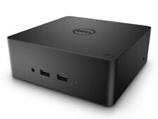

Resetting a Dell TB16 Thunderbolt dock (Updated)
Posted: Mar 11, 2019 15:03;
Last Modified: Jul 06, 2022 09:07
Keywords:

I have a TB16 Thunderbolt dock to act as a hub for my screens, internet, camera, and so on. Over the last couple of years, I’ve come to use two three techniques for resetting it
Resetting from “bricked”
This one I discovered when the dock was “bricked” (i.e. completely dead and unresponsive). But I use it quite often to reset the USB for peripherals (I have a real problem adding tablets (WASCOM or Remarkable) or phones (Android) via USB via the dock: it somehow seems to kill the dock’s ability to work with peripherals and then I use this to reset it (while rebooting the computer)).
The original post:
This afternoon I came back from a meeting and my computer was hibernating and the dock was dead: no power light, no light on the Thunderbolt cable, no response to commands, and no screen, sound, or internet pass through.
Looked through the Dell troubleshooting guide and found nothing.
In a chat with a tech, they told me how to reset the dock (I don’t see this anywhere obvious on the Dell site):
- Unplug the dock from power and from the computer
- Hold the power button on the dock down for 45 seconds
- Plug everything back in
- Power up.
That worked.
Resetting screens
Sometimes, my computer doesn’t seem able to read or recognise screens through the dock (this often happens when I get the peripheral crash discussed above). Even after the computer and dock have been reset it doesn’t seem to see the screens. What I do in that case is unplug and replug each of the cables going to the screen in turn. They start to work after that.
Resetting Thunderbolt
The third method I use is needed when the Dock isn’t recognised by my computer. This happens every so often: if I go to settings > privacy > thunderbolt, I’ll see both my docks listed as “disconnected” even though I’m plugged into one or the other.
I have two techniques for fixing this, one to follow the other.
- The first is to unlock the setting (you’ll see a little button at the top of the dialogue for this) and then “forget” each of the devices by clicking on them and selecting “forget device.” You then reset the dock, and restart the computer, and with lock it recognises it again.
- If that doesn’t work then the next step is to plug the dock into a different USB plug. That then recognises the dock, but it treats it as a new device (meaning you have to set everything up again. But once you see that it’s recognised, you can put the plug back in the original slot. It then restores all your settings and works.

Comment [67]
Peter Wibberley (Tue Jul 30, 2019 (03:30:50)) [PermLink]: Not clear how holding the button down on the dock works after the power supply to the dock has disconnected. Is that step essential?
Goku (Thu Oct 24, 2019 (02:13:06)) [PermLink]: This worked for a WD15 dock as well, thank you!
Abs (Sat Nov 9, 2019 (16:17:44)) [PermLink]: Thanks mate, your a lifesaver!!!
Brendan Minter (Fri Nov 15, 2019 (14:09:15)) [PermLink]: Thanks for the message/help.
B. Minter
HoustonJared (Wed Nov 20, 2019 (17:48:07)) [PermLink]: Thank you so much for posting this! We had a power outage and I was worried it was fried – but this worked – champion :-)
John (Wed Nov 27, 2019 (15:25:28)) [PermLink]: That worked. Thanks so much!
YY (Fri Dec 13, 2019 (15:28:15)) [PermLink]: Thanks man!! That worked for me after a power outage I thought it was fried. But working thx to you
Jay Blanchard (Sat Feb 22, 2020 (18:41:22)) [PermLink]: OMG, you are my hero. Just had a power surge and thought for sure I had fried my TB16. Tried your instructions and they worked like a charm. Thank you so much for posting this to help others like me!
Jamie (Thu Mar 26, 2020 (01:40:37)) [PermLink]: Amazing thanks so much for this, the dock was unresponsive this morning and this has just recovered it!!
JK (Sun Mar 29, 2020 (18:47:20)) [PermLink]: Thanks for the post. It helped me out today.
Michael Tardif (Thu Apr 9, 2020 (12:13:13)) [PermLink]: Thank you; just experienced an electrical event, and even though my devices are protected, the Thunderbolt flickered off while my computer and other peripherals did not. I thought the Thunderbolt was fried, and Dell documentation was no help. Your solution worked. Thanks again.
Bob (Tue Apr 14, 2020 (10:40:28)) [PermLink]: Thank you so much for this post. Worked like a charm.
Andrea Brunelle (Sun May 17, 2020 (19:49:17)) [PermLink]: Thanks for this! :)
Tonio (Wed May 20, 2020 (10:56:57)) [PermLink]: Thanks very much, you saved my day here in Argentina
Matt (Sat May 23, 2020 (07:34:51)) [PermLink]: I did not know about the 45 seconds on the power button. I have typically had the same problem every once in a while as well; and still do. The other option that I found was, unplug the power and laptop TB connection. Unplug every peripheral on the dock. Plug in power and TB to laptop. Power light on TB connector should come back on now. Plug in all dock peripherals. Press the dock button for a second and system should boot normally. Quite a pain. I’m frustrated about this. I would use the TB18, though I doubt it’s different, but that has other USB driver issues that cause blue screens. USB docks are the worst. They are just convenient for manufacturers; one for all even though power requirements make that null and void now (TB16 vs TB18). Thanks for you option. I will try that the next time the light won’t light. I believe temp power drops (storms) resulted in my issue this morning. Still very frustrating. I may need to put the dock power brick on UPS.
Angel (Tue Jun 30, 2020 (01:42:31)) [PermLink]: Thank you so much. I thought my docking station was fried. I actually went and purchased another docking station and it would work with one of my laptops but not my work laptop. I found your article later and tried your method and it worked seamlessly. Now tomorrow I will be going back to micro Center and returning that docking station that I purchased. Thank you again you saved me.
Eric (Sun Jul 12, 2020 (21:29:16)) [PermLink]: It worked for me. Thank you so much.
Paul Martin (Sat Jul 25, 2020 (05:25:11)) [PermLink]: Thank you… it worked!
Computer User (Fri Aug 7, 2020 (16:49:43)) [PermLink]: Why is this on an English professor’s website? It works by the way…
J McCombie (Tue Aug 11, 2020 (16:56:00)) [PermLink]: Thank you so much! This worked on my Dell WD19TB dock. I had a monitor plugged into the HDMI port on the dock.
The monitor kept saying that it could not detect the signal on the HDMI line. i tried everything. And the main reason i purchased this quite expensive dock was to plug the monitor into it
i admit i was skeptical, but thought why not, can’t hurt
Worked like a charm
Best wishes to you.
Stang (Tue Aug 18, 2020 (18:23:02)) [PermLink]: Trying the TB16 fix and it won’t work – no light on thunderbolt cable no matter what. Tried a different cable as well. Suggestions? BTW it simply stopped working
Dan Studebaker (Wed Aug 26, 2020 (12:48:29)) [PermLink]: Huge thanks for this!
Steve Walsman (Thu Sep 17, 2020 (08:38:57)) [PermLink]: I took a power hit and this procedure worked for me. The 45 second hold down of the power button. Wow! Seems counter intuitive, but it works!
Anne Horgan (Fri Sep 25, 2020 (03:15:24)) [PermLink]: Thank you, this worked perfectly!
Dan (Sun Oct 11, 2020 (12:34:29)) [PermLink]: @Stang: I’m afraid I don’t know the answer if this doesn’t work. I don’t want to say maybe something more serious happened, but that’s always a possibility.
Dan (Sun Oct 11, 2020 (12:38:25)) [PermLink]: A comment on a couple of things people have been saying:
1) I actually use this all the time, maybe daily. Zoom seems to have a memory leak in Linux and over the course of a day my memory gets used up and everything freezes. Or I had my wacom tablet during a call and the dock shuts down. I reset it using this method in both cases, usually having to cold boot the computer as well.
2) I don’t think it’s that unusual that holding a power button down while power is off resets electronic devices. I’m not sure of the engineering of it, but I’ve certainly seen it before. I always assumed that there must be some residual battery power or something and that you are flipping a reset button.
Tes (Tue Oct 20, 2020 (02:52:16)) [PermLink]: Confirmed, worked perfectly!
Thanks!Steve (Thu Oct 22, 2020 (05:17:41)) [PermLink]: I’ll be damned, the 45 second reset worked, I’m up and running. Thanks for the tip.
Pete (Tue Oct 27, 2020 (12:04:59)) [PermLink]: I had a power outage and this worked. I have had the dock for 4 years and actually had forgotten that there was a power switch.
Alli (Allison) Marshall (Mon Nov 9, 2020 (12:07:48)) [PermLink]: Thank you so much for posting this online. I had a power failure last week and despite my docking station being plugged into a surge protect and external battery it still needed a reset. I was about to host a 1/2 day meeting for 40 people across Canada so your article was literally a life-saver. Thank you!!
Paul (Tue Nov 10, 2020 (16:33:57)) [PermLink]: Thank you. This worked for me too!
For those wondering about the 45 seconds of holding the power button, electronic components inside the dock such as capacitors hold power after power is disconnected. They are like mini-batteries. It is likely this “holding down” is to ensure all that power is drained and the dock forgets past states and does a full cold boot. BTW, power to the dock can come from both the power supply or through the USB-C connector, which is why these both must be disconnected.Tong Li (Wed Nov 18, 2020 (08:12:31)) [PermLink]: This fixes almost any strange issue about the dell docking device. Very grateful!
Thabang Mathopo (Mon Nov 23, 2020 (02:07:32)) [PermLink]: Worked like a charm thank you
Robert Stirling (Tue Dec 22, 2020 (10:46:30)) [PermLink]: Worked! Thank you!
Laura (Thu Jan 14, 2021 (06:36:25)) [PermLink]: Very helpful, thank youu
DAVID E KEEN (Thu Feb 18, 2021 (17:47:11)) [PermLink]: Bravo! Been researching for a day and tried everything. Thanks!
Braden (Wed Feb 24, 2021 (11:17:29)) [PermLink]: For those having issues, make sure your dock firmware is current. Poke around the Dell site and look for firmware/BIOS updates for both your dock and your laptop. Makes a big difference, especially if the dock is a Thunderbolt one and not just USB.
Jerry (Mon Mar 1, 2021 (23:29:55)) [PermLink]: worked for me – thank you!
Paul (Sat Mar 6, 2021 (10:52:12)) [PermLink]: No work
Hugh (Thu Mar 18, 2021 (07:57:16)) [PermLink]: Worked for me too. Thanks.
Julian (Sun Apr 11, 2021 (06:11:01)) [PermLink]: Praise you and praise the internet. Thank you very much.
Christina (Fri Apr 16, 2021 (07:36:00)) [PermLink]: I willl add that I had to disconnect all the attached devices from the back so that it wouldn’t get any power coming to the station. That with the power disconnect worked.
Dan (Wed Apr 21, 2021 (09:25:19)) [PermLink]: Thank you so much Daniel Paul O’Donnell!!
Joey (Mon Jun 28, 2021 (07:49:00)) [PermLink]: Success! Thank you! I accidentally kicked the switch on the power strip beneath my desk and the dock wouldn’t come back to life until I found this post.
Michelle (Sat Jul 10, 2021 (12:41:58)) [PermLink]: Thank you so much! Same as everyone else – thought brick was fried. It was strange though as power was still getting through to laptop. Initially when I unplugged and replugged in the power to dock, dock light would blink a few times and fan would briefly come on. I tried the instructions, but didn’t work. However, when I plugged power supply and laptop back in, held down power button on dock for about 30s. Laptop shut off, then pushed power button on dock again and it came back on! Thank you!!
Fred (Sun Aug 8, 2021 (14:36:07)) [PermLink]: The House took a power FLICK and the TB16 went dead (never happened before on power hit).. THIS WORKS!!!! Thank you!!!
Jeff (Wed Aug 11, 2021 (15:20:28)) [PermLink]: Saved me! Thanks for putting this info into the world!
Craig Mueller (Wed Sep 1, 2021 (07:52:44)) [PermLink]: still works!
EDWARD ROBBINS (Sat Dec 11, 2021 (22:29:53)) [PermLink]: Wow. I’m impressed. I was ready to tear the X15 apart and replace its connector port. Your 45 second trick worked. Have no idea why.
Marcus (Wed Jan 19, 2022 (08:10:27)) [PermLink]: Great. Worked on my TB16
cedric (Mon Mar 7, 2022 (08:30:15)) [PermLink]: Resetting from “Bricked” – it worked !!
Thanks for the tipap (Sat Apr 2, 2022 (00:55:07)) [PermLink]: Confirmed still works, why doesn’t DELL post this on their FAQ site and TB16 service page. Thank you. DELL please add these tips in all future documentation.
JT (Fri Jun 24, 2022 (17:21:36)) [PermLink]: 45 second reset worked for me!
Frank (Mon Jul 18, 2022 (07:58:34)) [PermLink]: This worked great! Thank you!
AbelD (Mon Jul 25, 2022 (23:22:14)) [PermLink]: Massive thanks. I thought the TB16 was already dead. This solved my problem
Shane (Fri Aug 12, 2022 (02:14:33)) [PermLink]: Thank you
Julian (Tue Aug 23, 2022 (04:40:23)) [PermLink]: Thanks, great fix, all sorted :-)
Steve (Mon Aug 29, 2022 (11:47:51)) [PermLink]: Some asked why holding for 45 second with the power off works because it isn’t logical to reset it with no power. The answer is the 45 because even with the power unplugged there is still power retained in the docking station. Holding down the power helps drain the residual power which then helps clear what ever the problem was. For me that didn’t work. However leaving all connections removed from the dock and the dock unplugged from the laptop did work.
Shauna (Thu Sep 29, 2022 (09:43:08)) [PermLink]: I just did the “Resetting from ‘bricked’” method and it worked! Thank you so much. Not quite a life saver but for sure a major frustration saver. Thank you so much!!!
MM (Fri Dec 9, 2022 (13:17:23)) [PermLink]: This didn’t work for me. Do you continue holding the power button on the docking station when you plug the power brick back in? I’m not getting a power light on Thunderbolt cable coming from the docking station either…
Marcel de Witte (Mon Feb 13, 2023 (01:45:40)) [PermLink]: Awesome save thanks – was about to order a new one
AT (Thu Mar 16, 2023 (04:51:56)) [PermLink]: None of the above worked for me. However following procedure worked in my case:
- Unplug all connections to the laptop, and power down.
- Hold power button for 30+ sec.
- Connect power chord and boot up the PC.
miker formanek (Wed Mar 22, 2023 (09:19:20)) [PermLink]: This works! Thanks
KVNag (Sat Apr 29, 2023 (15:12:36)) [PermLink]: Such a lifesaver. The 45 second power button down worked like a charm
brent d (Mon Aug 14, 2023 (20:49:02)) [PermLink]: The 45 second thing actually works. Amazing!
Nick (Thu Aug 24, 2023 (06:06:09)) [PermLink]: You saved my day. Thank you!
Ian (Tue Oct 17, 2023 (11:42:17)) [PermLink]: Power off at the plug, unplugged dock from laptop and hold down the power for 45 seconds. Plug all back in then power on. Worked like a charm! If I didn’t plug all back in before turning on (including the connector to the laptop), it didn’t work.